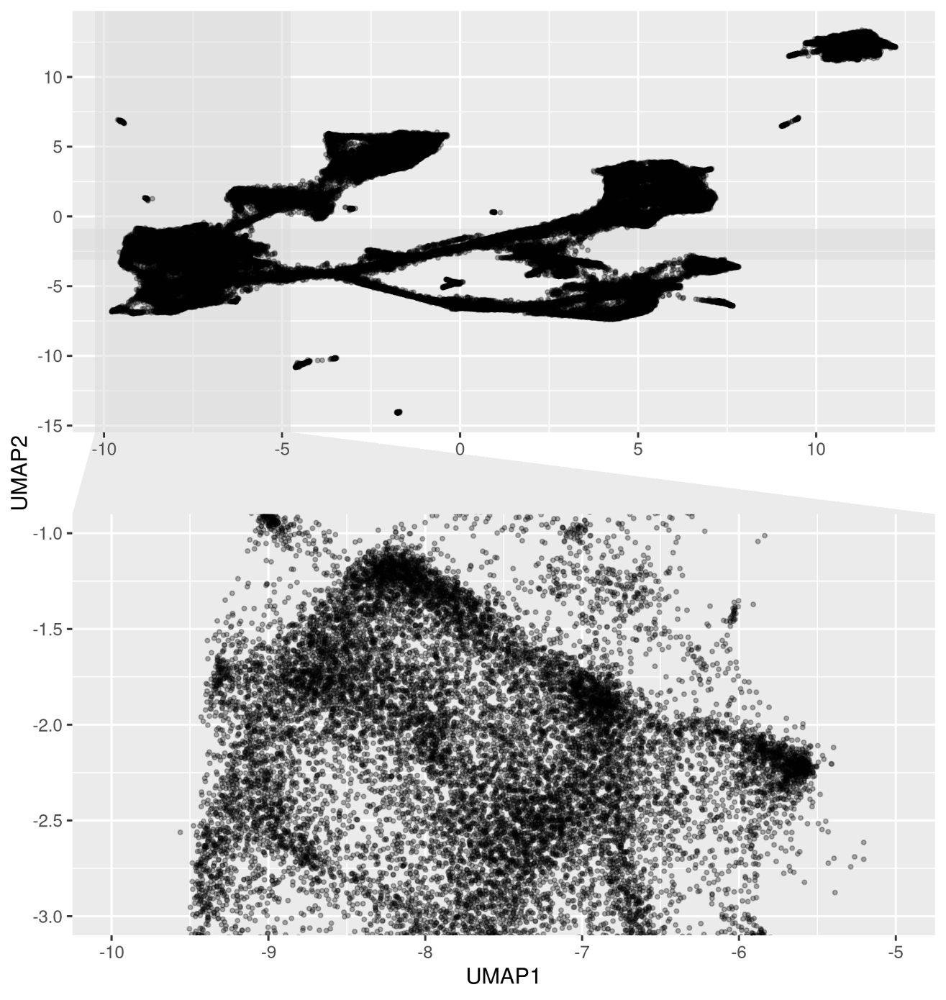
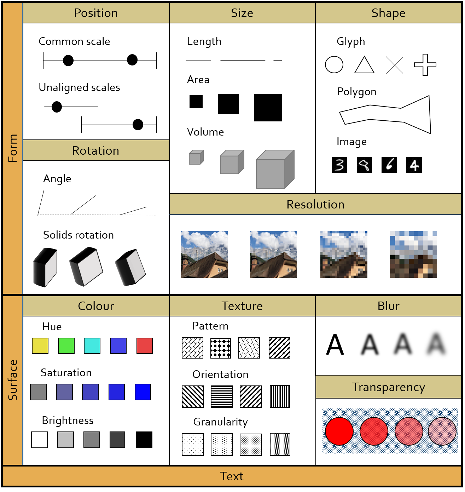
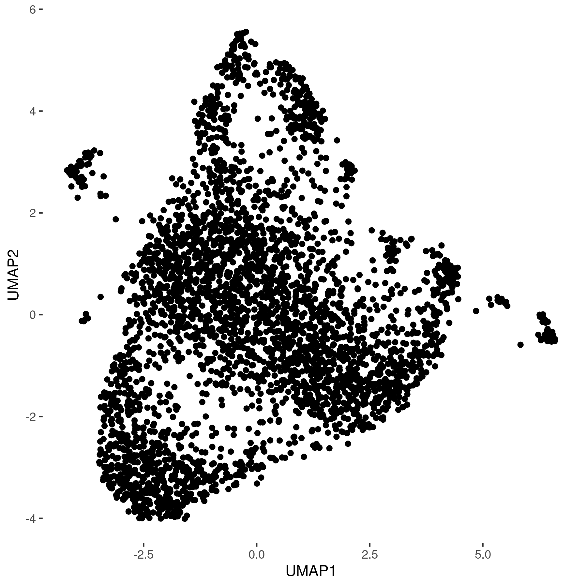
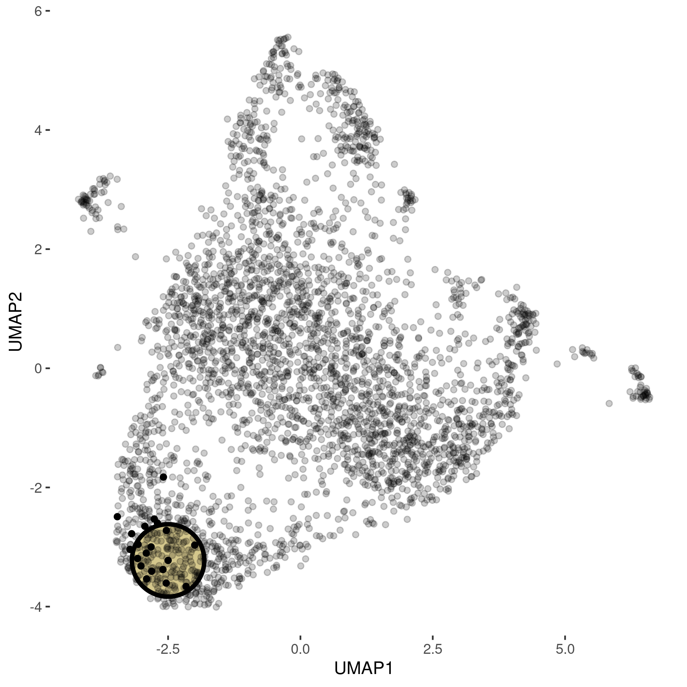
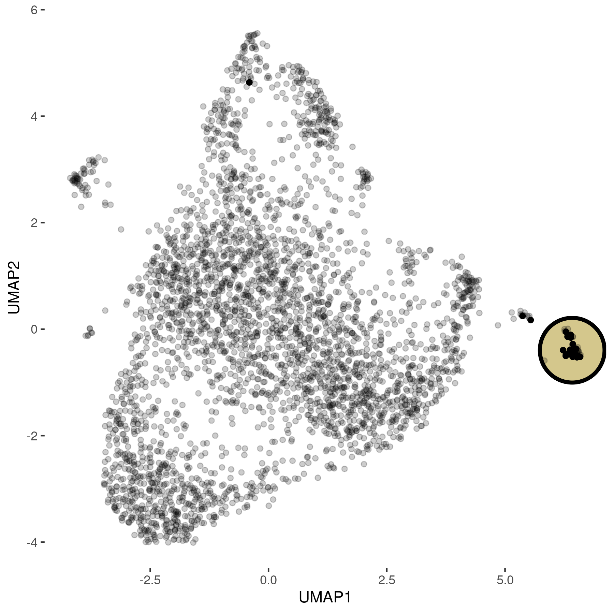
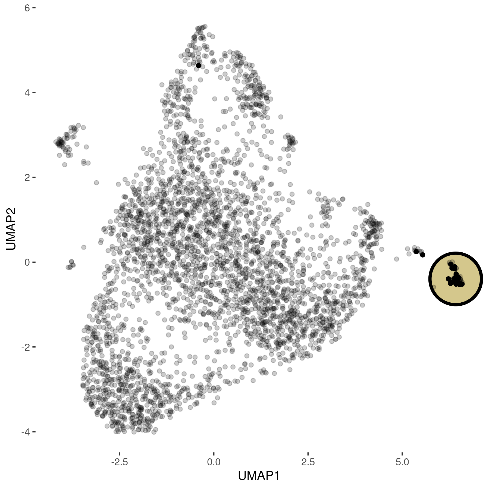
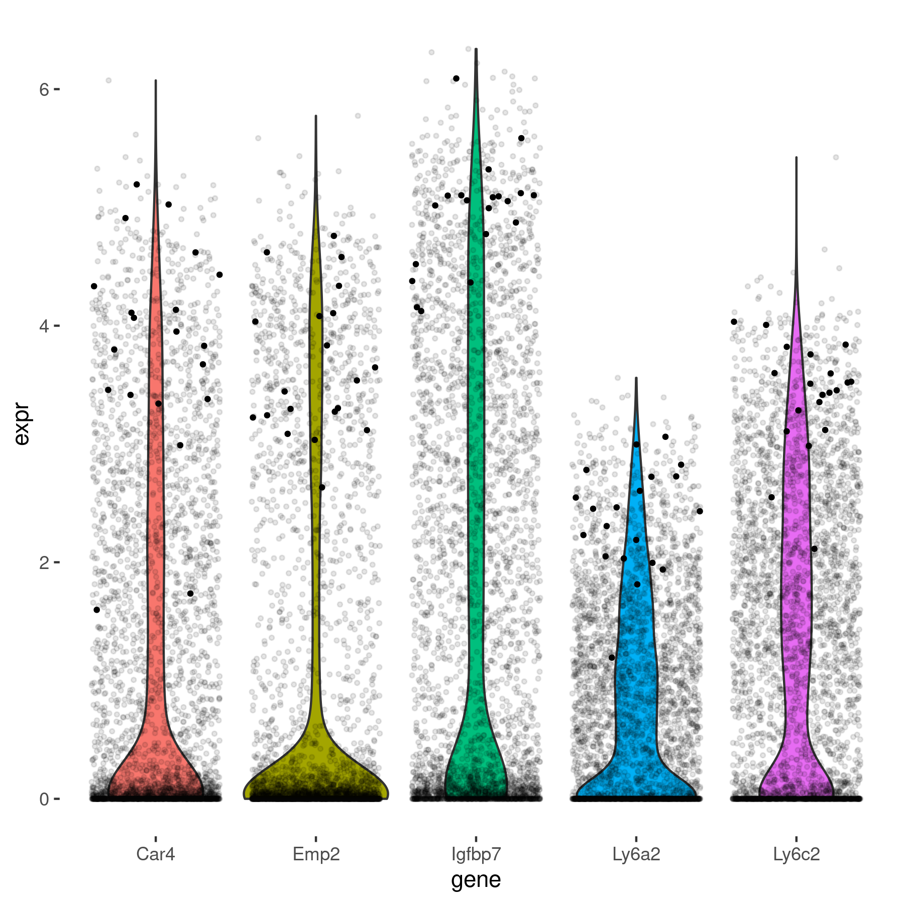
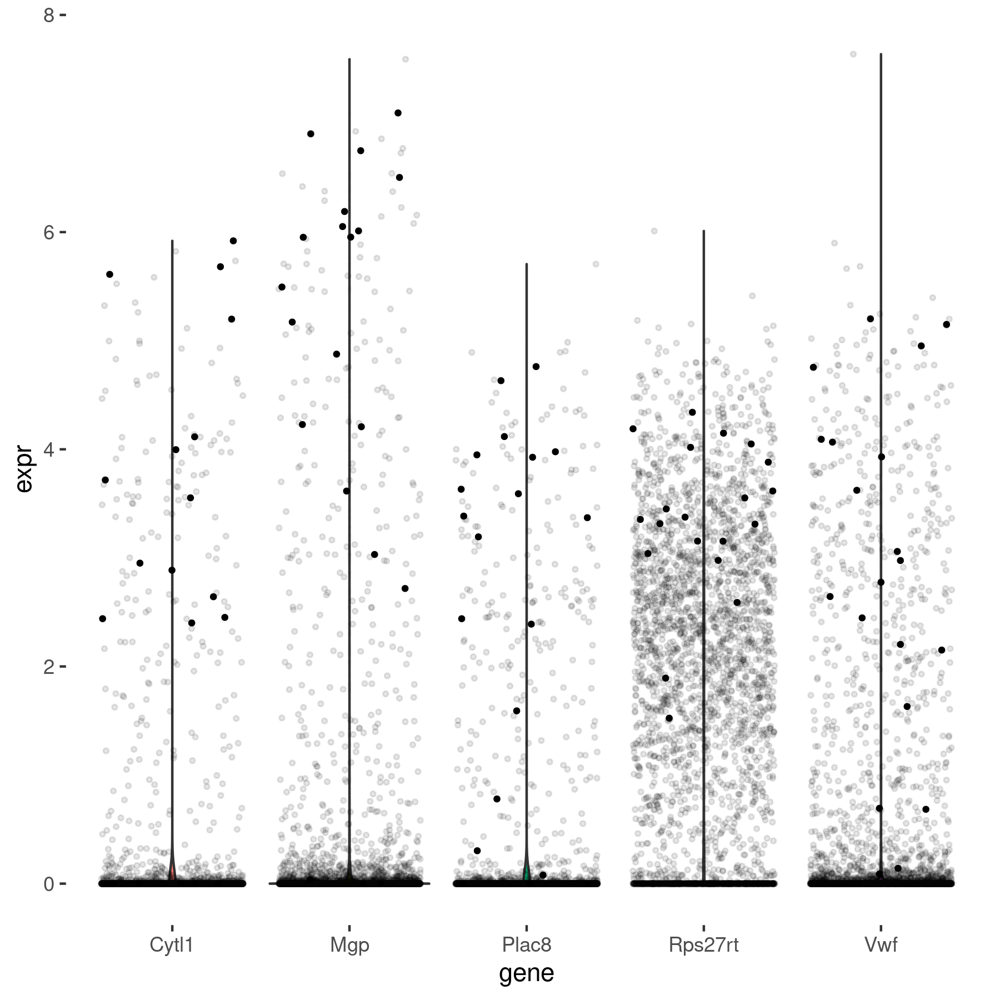
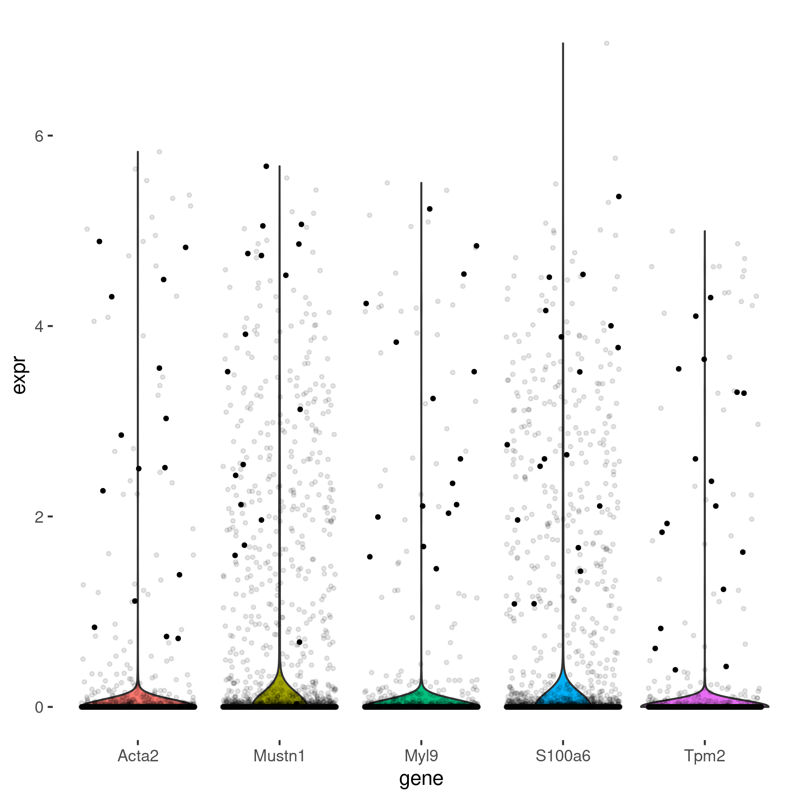
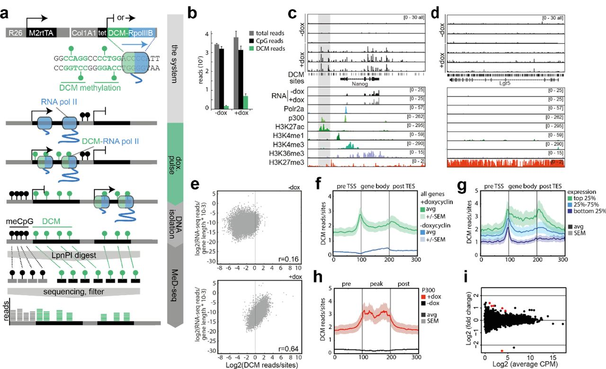

Number of elements |
Number of channels |
Interactive Visualisation
for Omics Data Exploration

| Presented by: | Svetlana Ovchinnikova |
| Slides at: | kloivenn.github.io/bioquant_meeting |
May 23rd, 2022
Heidelberg
Limitations of Static Plots
Unravel summary plots
|


 

|



|
data from Moritz Jakab, Vascular Oncology and Metastasis, DKFZ
Linked Charts
data from Moritz Jakab, Vascular Oncology and Metastasis, DKFZ
Visulisation flow
Dimensionality Reduction
Distortion Is Unavoidable

Sleepwalk
sleepwalk(Embeddings(Reductions(seu, "umap")), Embeddings(Reductions(seu, "pca")))Compare Samples
sleepwalk(list(um13_A, um13_B, um14),
list(comFeatures13_A, comFeatures13_B, comFeatures14), same = "features",
titles = c("e13.5_A", "e13.5_B", "e14.5"), nrow = 1)Packages
Available on CRAN
- rlc (LinkedCharts)
- sleepwalk
- jrc
Interactive plotting library
https://cran.r-project.org/package=rlc
Explore distortions in a 2D embeddings
https://cran.r-project.org/package=sleepwalk
R-JavaScript bridge for package developers
Single Cell DCM Methilation
Retrospective analysis of enhancer activity and transcriptome history
by Ruben Boers, Joachim Boers, <...>, Joost Gribnau on bioRxiv
in collaboration with Prof. Dr. Ana Martin-Villalba's Lab, DKFZ